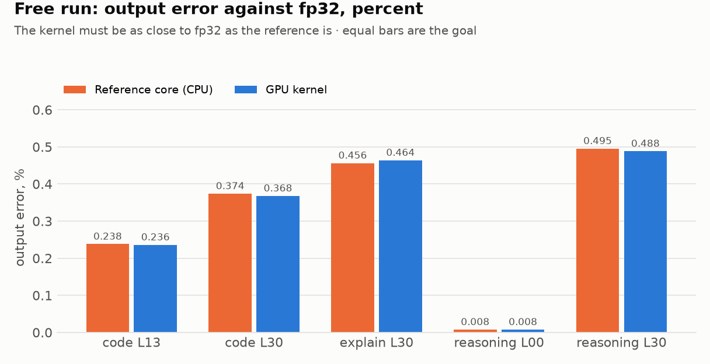

GPU kernel against the reference core
The same recorded traces go through the GPU kernel and through the C++ reference. Three things are compared; kernel/verify_kernel.py explains why.

| Trace | Result | In a window: median | 99% below | worst | Folds | Bit-identical folds | int8 entries that differ | Free run: kernel | reference | Drift between the two free runs |
|---|---|---|---|---|---|---|---|---|---|---|
| code_trace_layer_13 | PASS | 1.1e-07 | 3.3e-06 | 1.3e-04 | 100 | 100 | 0 of 52,428,800 | 0.2360% | 0.2380% | 3.0e-02 |
| code_trace_layer_30 | PASS | 6.9e-08 | 5.5e-06 | 1.3e-04 | 100 | 100 | 0 of 52,428,800 | 0.3678% | 0.3739% | 3.2e-02 |
| explain_trace_layer_30 | PASS | 6.1e-08 | 5.9e-06 | 9.0e-05 | 100 | 100 | 0 of 52,428,800 | 0.4639% | 0.4563% | 3.6e-02 |
| reasoning_trace_layer_00 | PASS | 4.4e-09 | 5.9e-07 | 2.9e-05 | 100 | 100 | 0 of 52,428,800 | 0.0076% | 0.0076% | 5.0e-04 |
| reasoning_trace_layer_30 | PASS | 5.8e-08 | 5.9e-06 | 1.6e-04 | 100 | 100 | 0 of 52,428,800 | 0.4883% | 0.4954% | 4.0e-02 |
What it shows
- 5 of 5 traces pass.
- The drift column is why a plain output comparison cannot be the test: two correct runs end this far apart.
Source: d_verify_*.txt.
Generated 2026-11-13 11:46 from results/run-quick-einstein-v5 by reports/generate_reports.py. All reports.